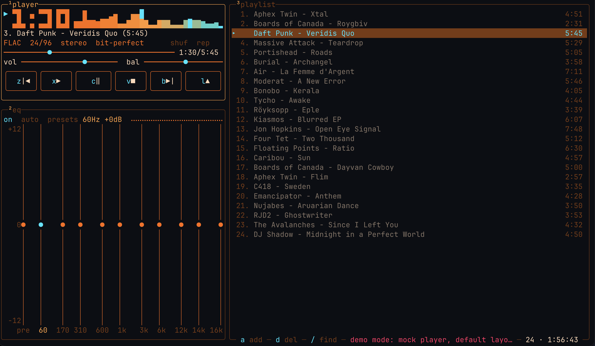

Ampwire

A terminal player inspired by Winamp 2, implemented from scratch for the terminal — and built for audiophiles: modern hi-fi playback that never transcodes or resamples the source.
It borrows Winamp 2's anatomy — player, equalizer, playlist — rendered as a keyboard-driven Ratatui TUI in a btop-style cyberpunk-retro look. It is not a port, clone or replica of Winamp: the UI, the playback engine and the library handling are all written for the terminal from scratch.
Local lossless files, Jellyfin server streaming, native SMB shares — no kernel mount, no libsmbclient. Keyboard-driven Ratatui TUI.
For audiophiles
Ampwire is built for hi-fi listening: reproduce the source as it is, never transcode it into something more convenient — from a UI that looks like Winamp 2 at the turn of the millennium.
- No transcoding. Nothing is re-encoded to another resolution or bitrate. Jellyfin is asked for the original file (
static=true), SMB shares are read for their original bytes, and everything is decoded locally. - No resampling. The output stream opens at the track's own sample rate and channel count; if the device cannot play that exact format, the track is reported as unplayable rather than converted to fit.
- No normalization, dithering or loudness matching. At volume 100, centered balance, no channel swap and a flat or off EQ, lossless playback is marked
bit-perfect— the decoded samples pass through untouched. Volume, balance and the 10-band EQ are opt-in processing, never applied silently. - Gapless between tracks with the same sample rate and channel count: the next decoder is swapped into the running stream at EOF, with no silence, click or device reopen.
- Decoded locally from FLAC, WAV/PCM, ALAC/AAC (M4A) and MP3 via Symphonia and cpal — local files, Jellyfin and SMB take the same path.
Install
Prebuilt binaries for macOS (Apple Silicon / Intel) and Linux (x86_64 / arm64):
macOS / Linux (curl):
Requirements
- macOS (Apple Silicon or Intel) or Linux with glibc ≥ 2.35.
- Linux: ALSA runtime (
libasound2/libasound2t64on Debian/Ubuntu,alsa-libon Fedora/Arch,alsaon openSUSE). - A real TTY; minimum terminal 40×3.
- Windows is unsupported.
First run
j loads a Jellyfin library (if configured), q quits. ampwire --demo runs a no-audio tour. ampwire --help for options.
Playback
- Formats: WAV/PCM, FLAC, MP3, M4A (AAC or ALAC) — decoded with Symphonia and played through cpal at the track's own sample rate and channel count (no resampling; lossless sources show
bit-perfect). - Play order: ordered (default) or full-permutation shuffle (
s— every track plays once per round), repeat (r). Tracks auto-advance. - Gapless between same-format tracks: the engine pre-opens the next track and swaps decoders inside the running stream at EOF.
- Jellyfin: with
[jellyfin]configured,jloads every audio track on the server;cache,streamorstream_puremodes. - SMB:
smb://server/share/path— a native SMB2/3 client (pure Rust, nolibsmbclient, no kernel mount);cacheorstreammode. - Volume, balance,
swap_channelsand a 10-band equalizer + preamp, all live inconfig.toml.
Verify the download
Checksums ship with every release:
Attestations:
More
Full README (keymap, configuration). GitHub Releases.